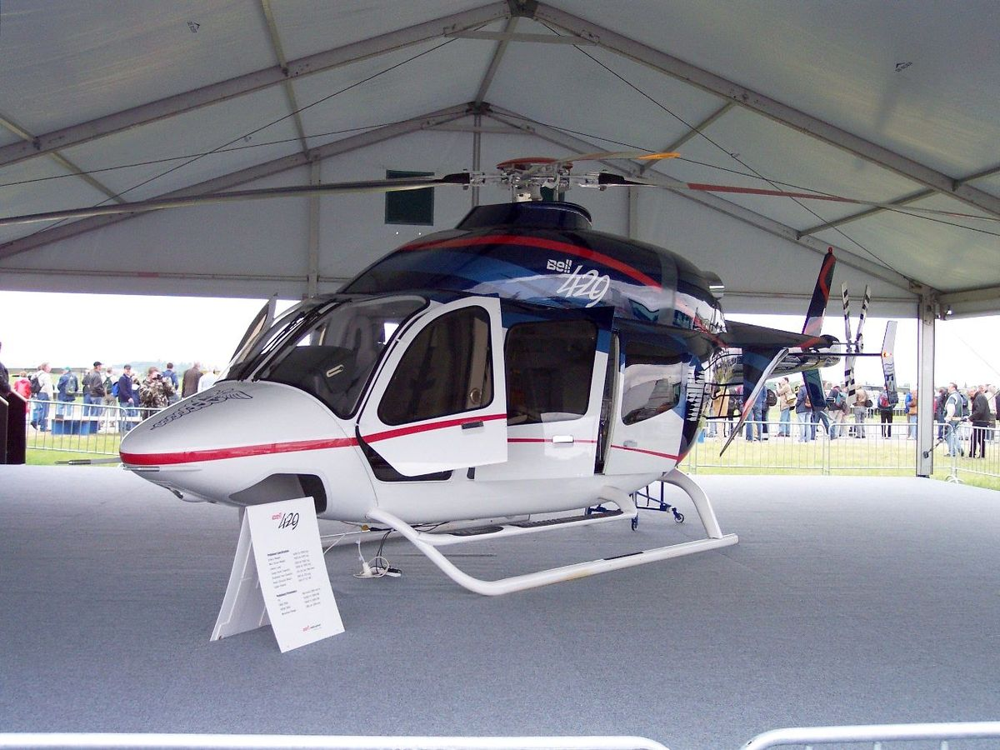

Bell 429 (helicóptero):
El Bell 429 es un helicóptero moderno con capacidad para 8 personas, especialmente diseñado para servicios médicos y rescate. Tiene una velocidad de 287 km/h y un alcance de 722 km. Su agilidad y capacidad de adaptación lo hacen ideal para operar en terrenos difÃciles. Dispone de configuraciones médicas versátiles.